A village on a river bend
I grew up in Pechera, a village in the Vinnytsia region that sits on a bend of the Southern Bug, with a ruined Potocki palace, an old mill, church domes over the cliff and a river you can swim across if you are stubborn about it. It is genuinely beautiful, and growing up somewhere beautiful does something to your eye.
I still think that is where my taste came from. Long before I knew what a level was, I was learning what it feels like to walk through a place that has been arranged well - where the path takes you, what the landmark on the hill is doing, why you keep looking back over your shoulder. Every environment I have designed since is a little bit that riverbank.
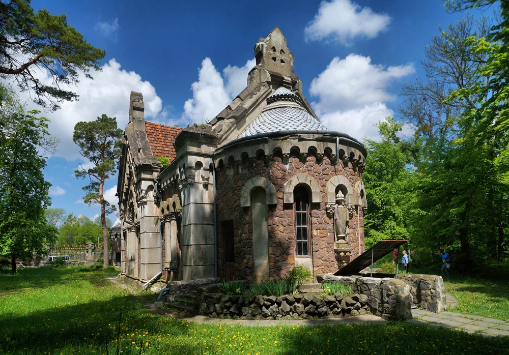
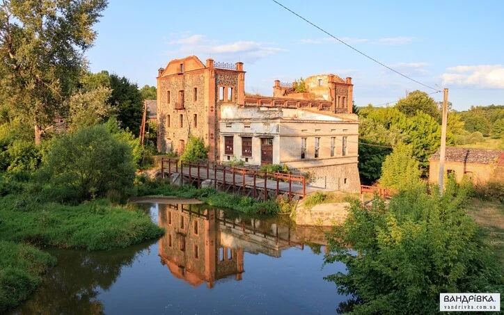
Nature, and a weakness for animals
I love being outdoors and I have never once managed to walk past a cat. This is not a hobby so much as a permanent condition - if there is a kitten in the yard, that is where I will be for the next twenty minutes.
It is not unrelated to the work, either. Designing a kitten daycare for four-year-olds is much easier when you actually like the animal you are asking a child to look after, and when you already know exactly how a cat behaves when it does not want to be picked up.
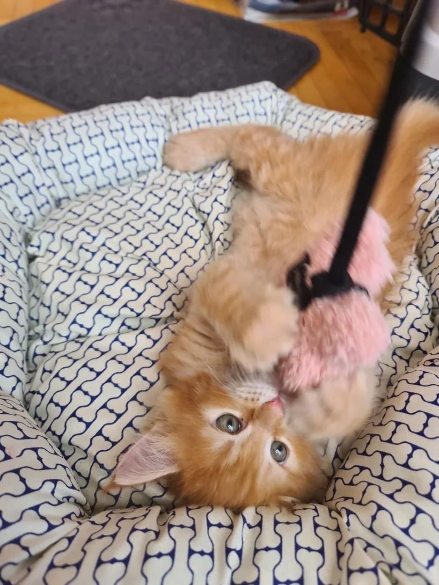
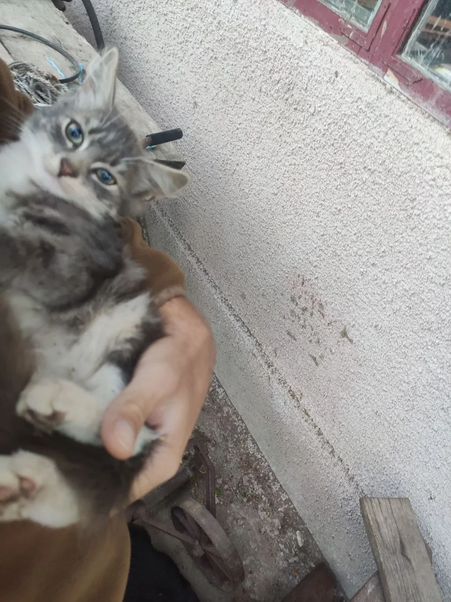
Five years on the water as a rescuer
It mattered to me to do something with an obvious point to it, so I worked as a lifeguard and rescuer. It is a strange job: long stretches of watching nothing happen, punctuated by minutes where everything depends on whether you noticed early enough and whether the drill is in your hands rather than your head.
I was recognised for it more than once, including a commendation from the Mayor of Kyiv. What I actually took from it is less presentable than a certificate: how a team behaves under pressure, why procedure exists, and how much of a good outcome is decided long before the emergency, in the boring preparation nobody photographs.
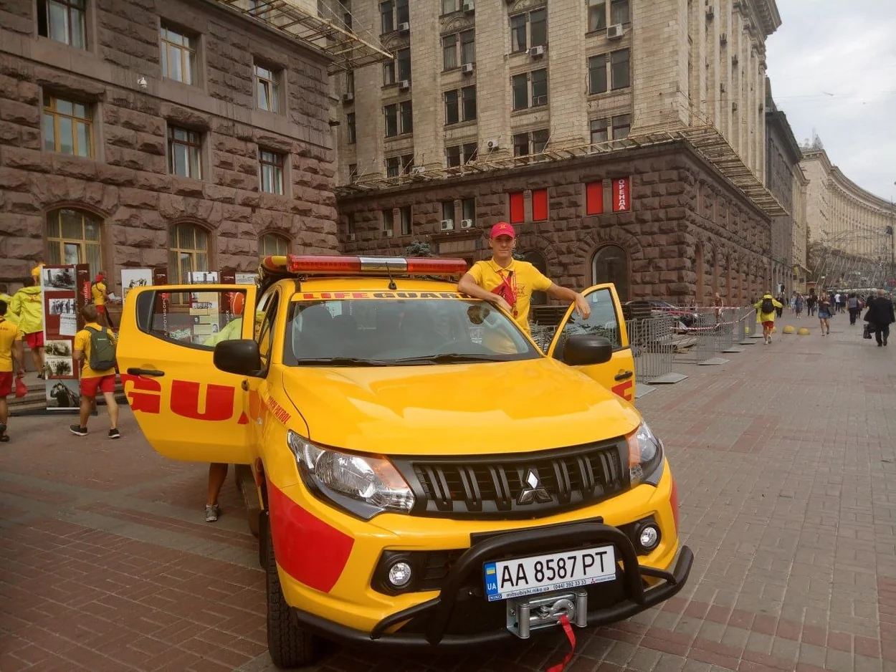
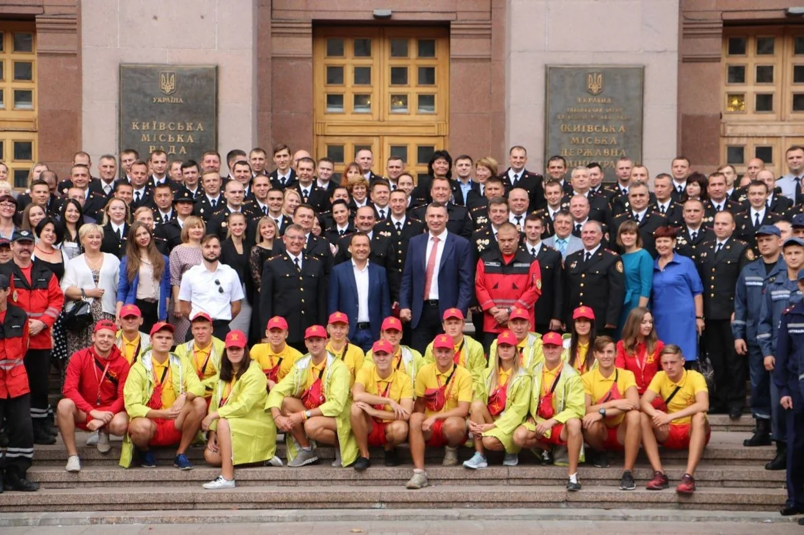
Lieutenant, infantry platoon commander
I served as an officer in the Ukrainian infantry, a platoon commander with the rank of lieutenant, and took part directly in combat operations - both as a soldier and responsible for the people under my command. That second part is the one that changed me. Being answerable for other people's lives rearranges your sense of what a difficult decision actually is.
It also permanently altered how I read a plan. I am the person on the team who asks what happens when this goes wrong, who is responsible when it does, and whether the instruction still makes sense to someone tired and under pressure. Deadlines are not nothing, but I have a fairly calibrated idea of where they sit.
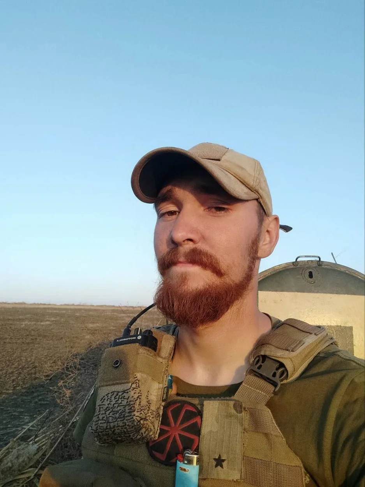
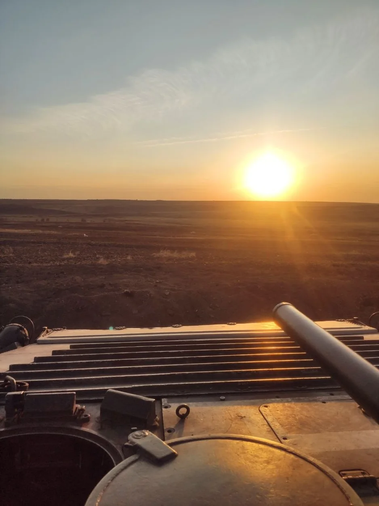
Trips that ask something of you
My preferred holiday is the kind you have to earn: mountains, a heavy pack, weather that does not care about your plans, and a view at the top that only exists for people who walked up. The Carpathians get most of my free weekends.
I like the shape of it - a clear goal, a real cost, and a payoff you cannot buy. That is also, more or less, the shape of a well-designed game level.
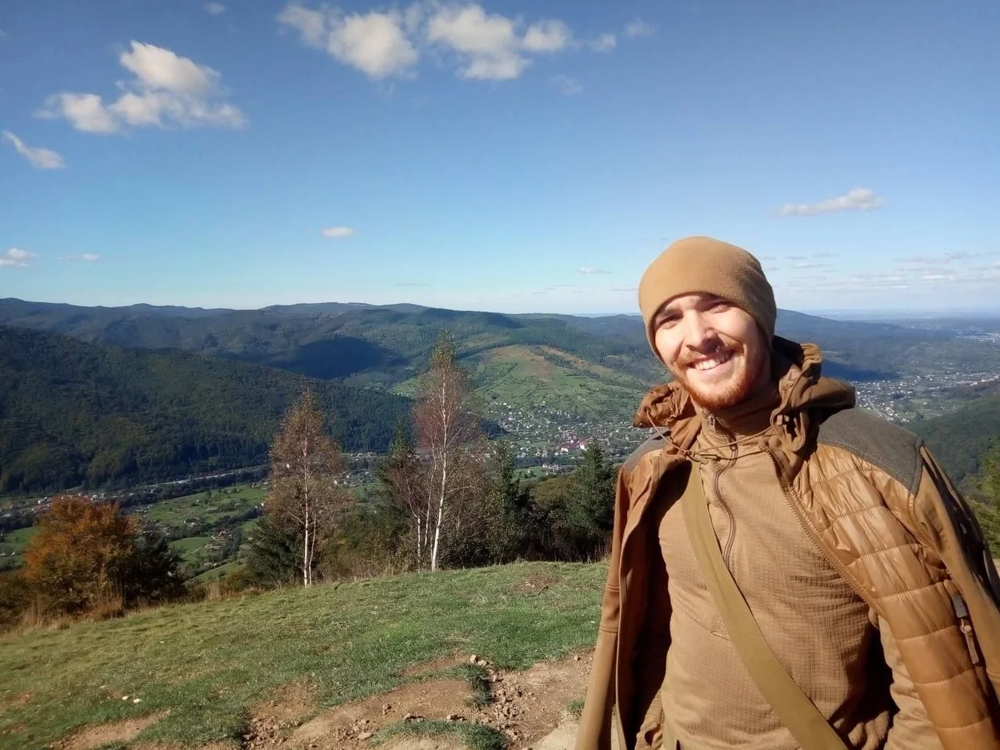
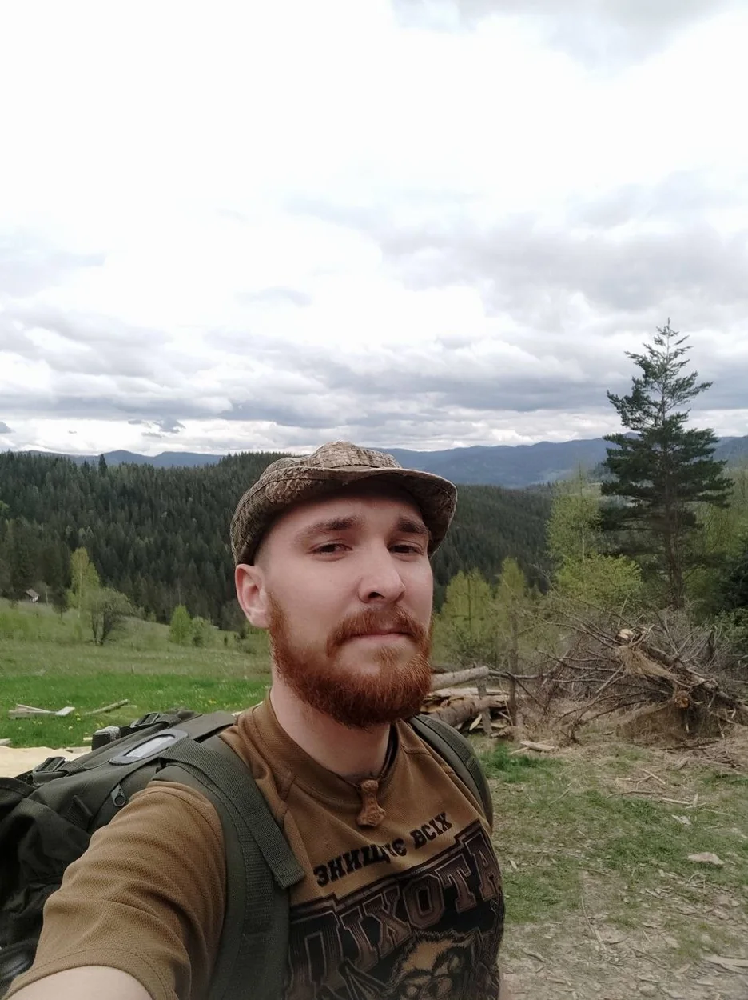
I play everything that comes out
Video games are the thing I would be doing anyway. I play new releases as they land, across every genre, partly out of professional curiosity and mostly because I cannot help myself. Being current is not research to me, it is just Tuesday.
The one that rearranged my world as a child was Star Wars: Knights of the Old Republic. It was the first time a game made me feel that my choices were mine, that a story could turn on something I decided, and that a world could be big enough to have opinions about. Everything I have tried to build since has been chasing some version of that feeling.
Board games, which are just design with the lid off
I collect and play board games obsessively - Scythe, Arkham Horror, Terraforming Mars, Fallout, Ticket to Ride and a shelf that has stopped pretending it has room.
They are the most honest design school there is. Every rule is visible, every economy is on the table, and when something is unbalanced you find out within one evening because four people tell you to your face. A lot of what I know about pacing and player turns came from being beaten at cardboard.
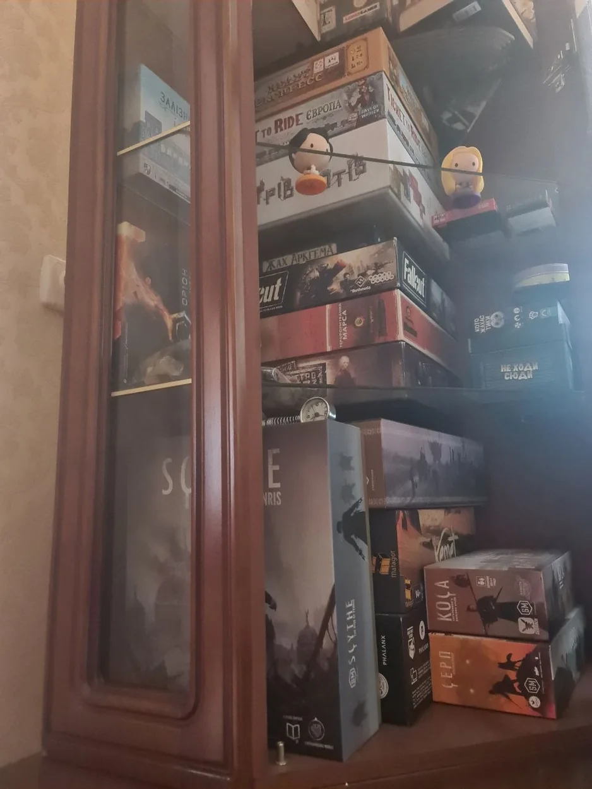
Anime, manga, and a shelf of gothic horror
I read constantly, and I have a specific weakness: gothic and horror literature. Poe, Lovecraft, Merritt, Bierce, Crowley - the shelf is almost uniformly black-spined and I am not sorry about it. Alongside that, plenty of anime and manga, Hannibal and Fullmetal Alchemist among the volumes that get re-read.
Horror is a genuinely useful genre to study, because it lives or dies on pacing and on what you withhold. That is exactly the same problem as designing a hidden-object adventure or the first minute of a kids' game: knowing precisely how much to show, and when.
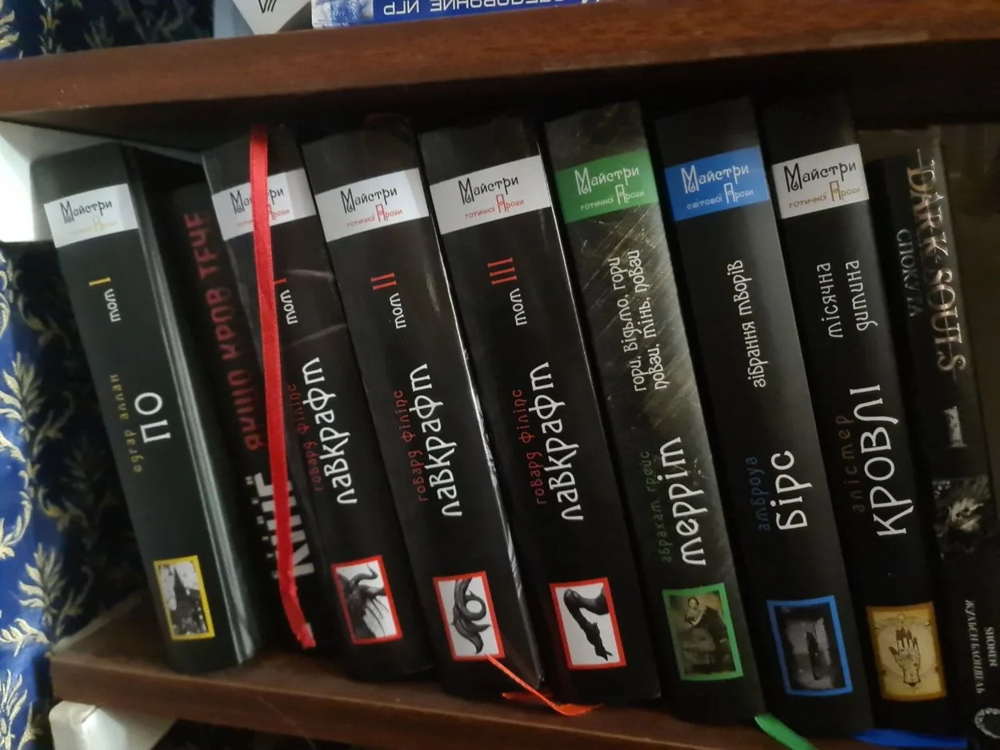
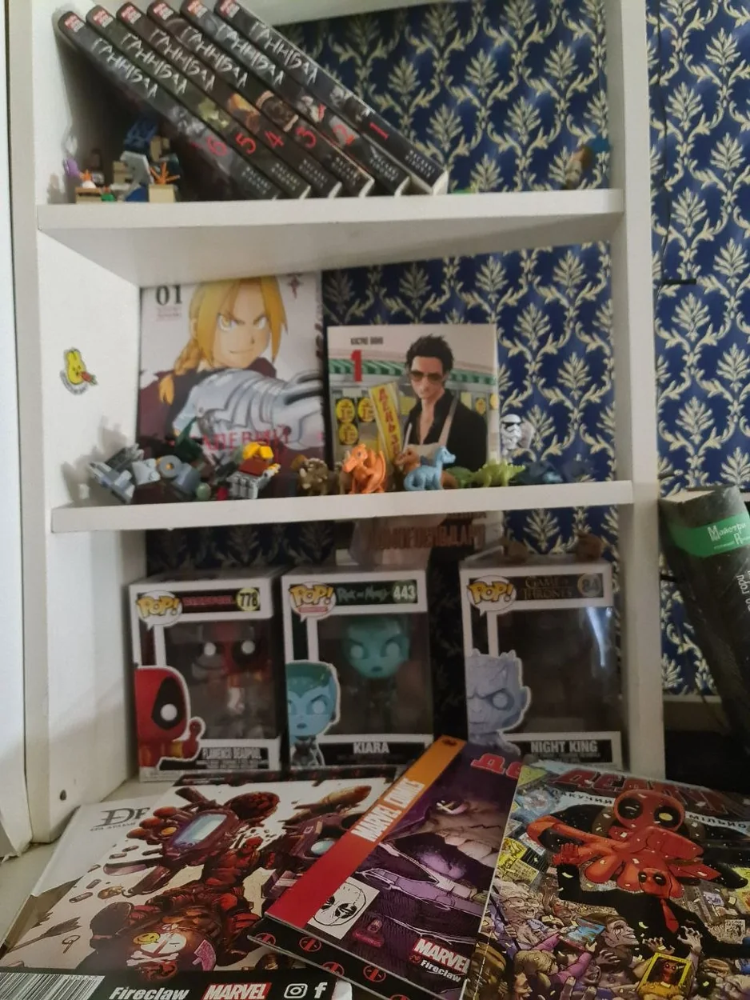
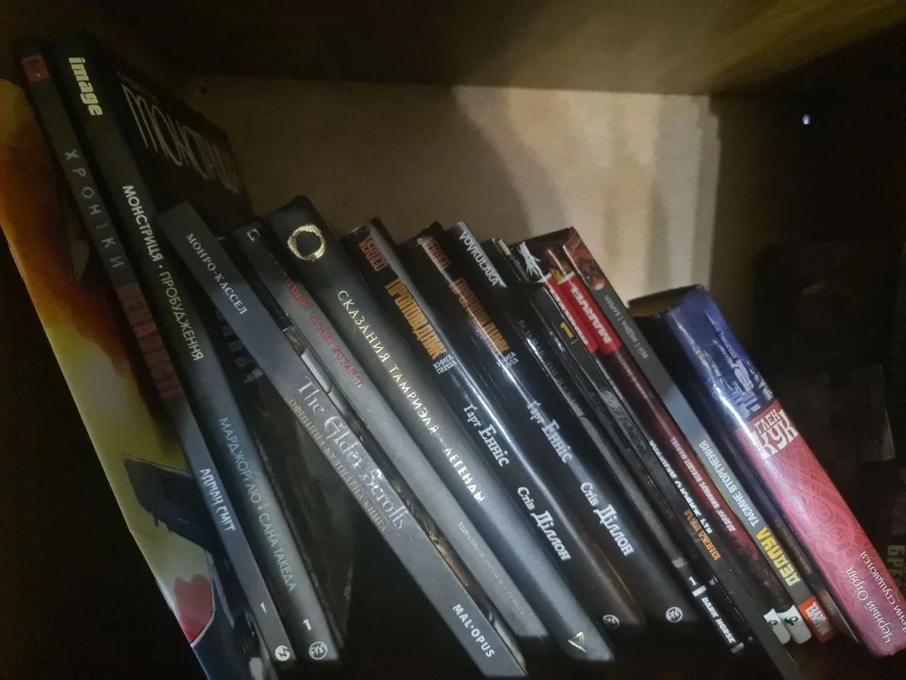